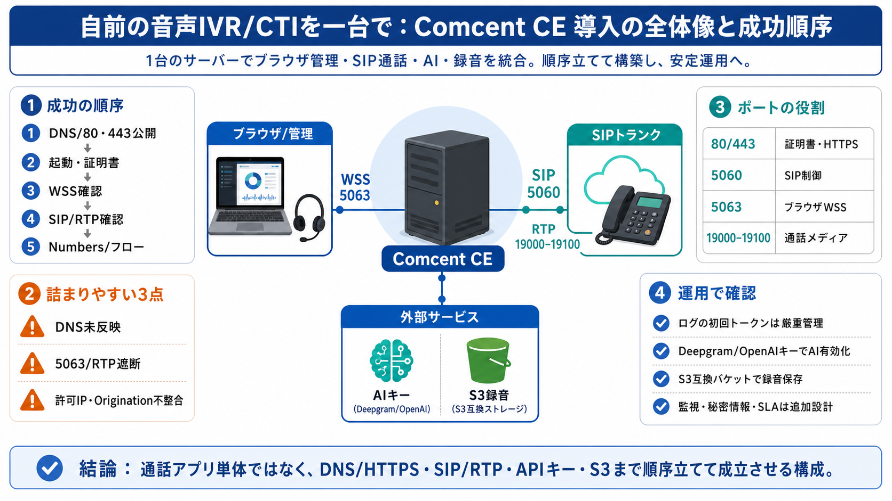

Setting up a SIP trunk — A step-by-step guide - Telnyx
| 3 | Configure your softphone | [Zoiper configuration guide](https://developers.telnyx.com/docs/voice/sip-trunking/conf…

自前の音声IVR/CTIを一台で
SIPトランク連携（Twilio/Telnyx等）・ブラウザダイヤラー・キュー・録音・文字起こし・AI要約・リアルタイムAIボイスボットまで。
難所は統合の連鎖
Comcent CEは「通話アプリ」ではなく、DNS/HTTPS、SIP、RTP、S3・APIキーまで一連で成立させる必要がある。
一台で回す全体像
起動までの最短手順
ここが“効く”情報
初回は「セットアップトークン」がログに出るため、管理者作成とトラブル切り分けの両方に使える。
DNS → WSS → SIP
“持ち込み”の責任
柔軟だが、品質と可用性は「トランク設定の成否」に強く依存する。
ポートは役割が違う
“403”は典型パターン
SIPトランクから403が返る場合、README上は「ホストのパブリックIPが allow list に入っていない」可能性が典型。
AIは“外部キー”前提
READMEでは、キーが空欄だとAI関連が無効になる扱いになっている。
録音はストレージ依存
詰まりやすい3点
要点（賛否）
最後に：順序で勝つ
DNS→起動→証明書→ブラウザWSS→SIPトランク→Numbers/フローの順で確認すれば、失敗原因を速く絞れる。
| 3 | Configure your softphone | [Zoiper configuration guide](https://developers.telnyx.com/docs/voice/sip-trunking/conf…
# Telnyx & LiveKit: SIP Trunk Configuration. Integrate Telnyx SIP Trunks with LiveKit for real-time audio and video appl…
# Elastic SIP Trunking Configuration Guides. The following Configuration Guides are intended to help you connect your IP…
How to Configure SIP Trunk in Twilio and Connect to From Asterisk (2026) The Code City 40700 subscribers 9 likes 879 vie…
This short guide takes you through the steps required to setup your Twilio Elastic SIP Trunk with 3CX. Take a look.